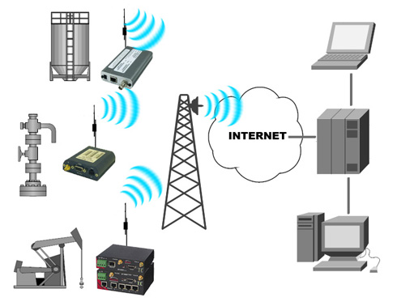

Wireless data connections used in mobile computing take three general forms. Cellular data service uses technologies GSM, CDMA or GPRS, 3G networks such as W-CDMA, EDGE or CDMA2000. and more recently 4G and 5G networks. These networks are usually available within range of commercial cell towers. Wi-Fi connections offer higher performance, may be either on a private business network or accessed through public hotspots, and have a typical range of 100 feet indoors and up to 1000 feet outdoors. Satellite Internet access covers areas where cellular and Wi-Fi are not available and may be set up anywhere the user has a line of sight to the satellite's location, which for satellites in geostationary orbit means having an unobstructed view of the southern sky. Some enterprise deployments combine networks from multiple cellular networks or use a mix of cellular, Wi-Fi and satellite. When using a mix of networks, a mobile virtual private network (mobile VPN) not only handles the security concerns, but also performs the multiple network logins automatically and keeps the application connections alive to prevent crashes or data loss during network transitions or coverage loss.
